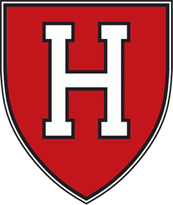

ECAC
 Colgate
Colgate
Colgate is 10-6-0 and 10th in the NPI. Across 500 simulated seasons its median NPI finish is 13th, with a 95% range of 8th to 22nd. ELO expects about 5 wins in the next 10.
Next 10 games
- Sat, Nov 21
 vs Cornell49%
vs Cornell49% - Fri, Dec 4at St. Lawrence54%
- Sat, Dec 5
 at Clarkson24%
at Clarkson24% - Fri, Jan 1
 at Mercyhurst31%
at Mercyhurst31% - Sat, Jan 2at Mercyhurst31%
- Tue, Jan 5
 vs Syracuse78%
vs Syracuse78% - Fri, Jan 8

at Harvard59% - Sat, Jan 9
 at Dartmouth75%
at Dartmouth75% - Fri, Jan 15
 vs Yale51%
vs Yale51% - Sat, Jan 16
 vs Brown57%
vs Brown57%
Win chances from ELO; the dot is stronger the more lopsided the game.
Projected NPI finish
500 simulated seasons, remaining games decided by ELO win chances. Dashed line: median. Shaded: 95% range.